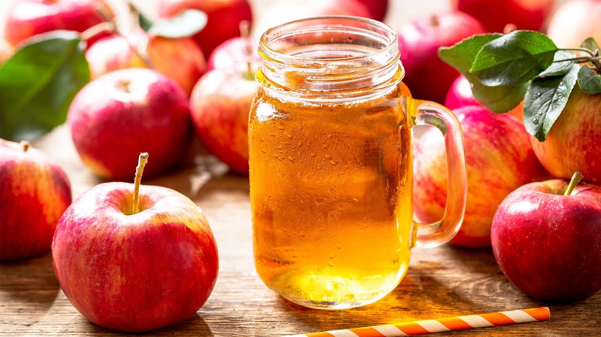

Apples
About

An apple is an edible fruit produced by an apple tree (Malus domestica). Apple trees are cultivated worldwide and are the most widely grown species in the genus Malus. The tree originated in Central Asia, where its wild ancestor, Malus sieversii, is still found today. Apples have been grown for thousands of years in Asia and Europe and were brought to North America by European colonists. Apples have religious and mythological significance in many cultures, including Norse, Greek, and European Christian tradition.
When harvested, apples are usually roundish, 5-10 cm (2-4 inches) in diameter, and some shade of red, green, or yellow in colour; they vary in size, shape, and acidity depending on the variety.
Since the apple requires a considerable period of dormancy, it thrives in areas having a distinct winter period, generally from latitude 30° to 60°, both north and south. Northward, apple growing is limited by low winter temperatures and a short growing season. The soils in which apple trees grow must be well drained; fertilizers can be used if the yield is not high enough. Rolling hilltops or the sloping sides of hills are preferred because they provide “air drainage,” allowing the colder, heavier air to drain away to the valley below during frosty spring nights, when blossoms or young fruit would be destroyed by exposure to cold.
Products made from apples
-
Apple juice is a fruit juice made by the maceration and pressing of an apple. The resulting expelled juice may be further treated by enzymatic and centrifugal clarification to remove the starch and pectin, which holds fine particulate in suspension, and then pasteurized for packaging in glass, metal, or aseptic processing system containers, or further treated by dehydration processes to a concentrate.
- Apple Jam is a Fruit preserves which are preparations of fruits whose main preserving agent is sugar and sometimes acid, often stored in glass jars and used as a condiment or spread. Jam refers to a product made of whole fruit cut into pieces or crushed, then heated with water and sugar until it reaches "jelling" or "setting" point, which is achieved through the action of natural or added pectin. It is then sealed in containers.